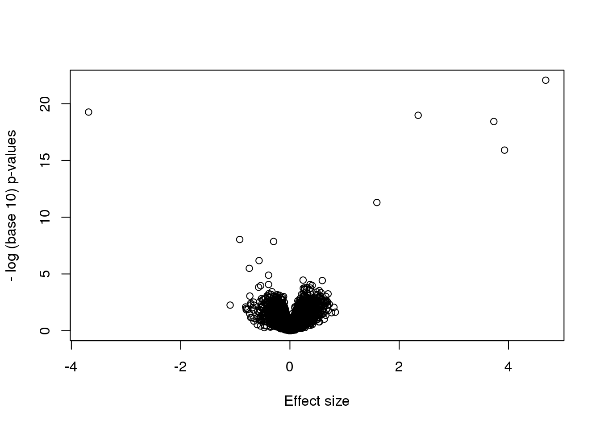

第 6 章 Inference for High Dimensional Data
6.1 Introduction
High-throughput technologies have changed basic biology and the biomedical sciences from data poor disciplines to data intensive ones. A specific example comes from research fields interested in understanding gene expression. Gene expression is the process in which DNA, the blueprint for life, is copied into RNA, the templates for the synthesis of proteins, the building blocks for life. In the 1990s, the analysis of gene expression data amounted to spotting black dots on a piece of paper or extracting a few numbers from standard curves. With high-throughput technologies, such as microarrays, this suddenly changed to sifting through tens of thousands of numbers. More recently, RNA sequencing has further increased data complexity. Biologists went from using their eyes or simple summaries to categorize results, to having thousands (and now millions) of measurements per sample to analyze. In this chapter, we will focus on statistical inference in the context of high-throughput measurements. Specifically, we focus on the problem of detecting differences in groups using statistical tests and quantifying uncertainty in a meaningful way. We also introduce exploratory data analysis techniques that should be used in conjunction with inference when analyzing high-throughput data. In later chapters, we will study the statistics behind clustering, machine learning, factor analysis and multi-level modeling.
Since there is a vast number of available public datasets, we use several gene expression examples. Nonetheless, the statistical techniques you will learn have also proven useful in other fields that make use of high-throughput technologies. Technologies such as microarrays, next generation sequencing, fMRI, and mass spectrometry all produce data to answer questions for which what we learn here will be indispensable.
6.1.0.1 Data packages
Several of the examples we are going to use in the following sections are best obtained through R packages. These are available from GitHub and can be installed using the install_github function from the devtools package. Microsoft Windows users might need to follow these instructions to properly install devtools.
Once devtools is installed, you can then install the data packages like this:
library(devtools)
install_github("genomicsclass/GSE5859Subset")6.1.0.2 The three tables
Most of the data we use as examples in this book are created with high-throughput technologies. These technologies measure thousands of features. Examples of features are genes, single base locations of the genome, genomic regions, or image pixel intensities. Each specific measurement product is defined by a specific set of features. For example, a specific gene expression microarray product is defined by the set of genes that it measures.
A specific study will typically use one product to make measurements on several experimental units, such as individuals. The most common experimental unit will be the individual, but they can also be defined by other entities, for example different parts of a tumor. We often call the experimental units samples following experimental jargon. It is important that these are not confused with samples as referred to in previous chapters, for example “random sample”.
So a high-throughput experiment is usually defined by three tables: one with the high-throughput measurements and two tables with information about the columns and rows of this first table respectively.
Because a dataset is typically defined by a set of experimental units and a product defines a fixed set of features, the high-throughput measurements can be stored in an \(n \times m\) matrix, with \(n\) the number of units and \(m\) the number of features. In R, the convention has been to store the transpose of these matrices.
Here is an example from a gene expression dataset:
library(GSE5859Subset)
data(GSE5859Subset) ##this loads the three tables
dim(geneExpression)## [1] 8793 24We have RNA expression measurements for 8793 genes from blood taken from 24 individuals (the experimental units). For most statistical analyses, we will also need information about the individuals. For example, in this case the data was originally collected to compare gene expression across ethnic groups. However, we have created a subset of this dataset for illustration and separated the data into two groups:
dim(sampleInfo)## [1] 24 4head(sampleInfo)## ethnicity date filename group
## 107 ASN 2005-06-23 GSM136508.CEL.gz 1
## 122 ASN 2005-06-27 GSM136530.CEL.gz 1
## 113 ASN 2005-06-27 GSM136517.CEL.gz 1
## 163 ASN 2005-10-28 GSM136576.CEL.gz 1
## 153 ASN 2005-10-07 GSM136566.CEL.gz 1
## 161 ASN 2005-10-07 GSM136574.CEL.gz 1sampleInfo$group## [1] 1 1 1 1 1 1 1 1 1 1 1 1 0 0 0 0 0 0 0 0 0 0 0 0One of the columns, filenames, permits us to connect the rows of this table to the columns of the measurement table.
match(sampleInfo$filename,colnames(geneExpression))## [1] 1 2 3 4 5 6 7 8 9 10 11 12 13 14 15 16 17
## [18] 18 19 20 21 22 23 24Finally, we have a table describing the features:
dim(geneAnnotation)## [1] 8793 4head(geneAnnotation)## PROBEID CHR CHRLOC SYMBOL
## 1 1007_s_at chr6 30852327 DDR1
## 30 1053_at chr7 -73645832 RFC2
## 31 117_at chr1 161494036 HSPA6
## 32 121_at chr2 -113973574 PAX8
## 33 1255_g_at chr6 42123144 GUCA1A
## 34 1294_at chr3 -49842638 UBA7The table includes an ID that permits us to connect the rows of this table with the rows of the measurement table:
head(match(geneAnnotation$PROBEID,rownames(geneExpression)))## [1] 1 2 3 4 5 6The table also includes biological information about the features, namely chromosome location and the gene “name” used by biologists.
6.2 Inference in Practice
Suppose we were given high-throughput gene expression data that was measured for several individuals in two populations. We are asked to report which genes have different average expression levels in the two populations. If instead of thousands of genes, we were handed data from just one gene, we could simply apply the inference techniques that we have learned before. We could, for example, use a t-test or some other test. Here we review what changes when we consider high-throughput data.
6.2.0.1 p-values are random variables
An important concept to remember in order to understand the concepts presented in this chapter is that p-values are random variables. To see this, consider the example in which we define a p-value from a t-test with a large enough sample size to use the CLT approximation. Then our p-value is defined as the probability that a normally distributed random variable is larger, in absolute value, than the observed t-test, call it \(Z\). So for a two sided test the p-value is:
\[ p = 2 \{ 1 - \Phi(\mid Z \mid)\} \]
In R, we write:
2*( 1-pnorm( abs(Z) ) )Now because \(Z\) is a random variable and \(\Phi\) is a deterministic function, \(p\) is also a random variable. We will create a Monte Carlo simulation showing how the values of \(p\) change. We use femaleControlsPopulation.csv from earlier chapters.
We read in the data, and use replicate to repeatedly create p-values.
set.seed(1)
population = unlist( read.csv(filename) )
N <- 12
B <- 10000
pvals <- replicate(B,{
control = sample(population,N)
treatment = sample(population,N)
t.test(treatment,control)$p.val
})
hist(pvals)(#fig:pvalue_hist)P-value histogram for 10,000 tests in which null hypothesis is true.
As implied by the histogram, in this case the distribution of the p-value is uniformly distributed. In fact, we can show theoretically that when the null hypothesis is true, this is always the case. For the case in which we use the CLT, we have that the null hypothesis \(H_0\) implies that our test statistic \(Z\) follows a normal distribution with mean 0 and SD 1 thus:
\[ p_a = \mbox{Pr}(Z < a \mid H_0) = \Phi(a) \]
This implies that:
\[ \begin{align*} \mbox{Pr}(p < p_a) &= \mbox{Pr}[ \Phi^{-1}(p) < \Phi^{-1}(p_a) ] \\ & = \mbox{Pr}(Z < a) = p_a \end{align*} \]
which is the definition of a uniform distribution.
6.2.0.2 Thousands of tests
In this data we have two groups denoted with 0 and 1:
library(GSE5859Subset)
data(GSE5859Subset)
g <- sampleInfo$group
g## [1] 1 1 1 1 1 1 1 1 1 1 1 1 0 0 0 0 0 0 0 0 0 0 0 0If we were interested in a particular gene, let’s arbitrarily pick the one on the 25th row, we would simply compute a t-test. To compute a p-value, we will use the t-distribution approximation and therefore we need the population data to be approximately normal. We check this assumption with a qq-plot:
e <- geneExpression[25,]
library(rafalib)
mypar(1,2)
qqnorm(e[g==1])
qqline(e[g==1])
qqnorm(e[g==0])
qqline(e[g==0])
(#fig:qqplots_for_one_gene)Normal qq-plots for one gene. Left plot shows first group and right plot shows second group.
The qq-plots show that the data is well approximated by the normal approximation. The t-test does not find this gene to be statistically significant:
t.test(e[g==1],e[g==0])$p.value## [1] 0.7793To answer the question for each gene, we simply repeat the above for each gene. Here we will define our own function and use apply:
myttest <- function(x) t.test(x[g==1],x[g==0],var.equal=TRUE)$p.value
pvals <- apply(geneExpression,1,myttest)We can now see which genes have p-values less than, say, 0.05. For example, right away we see that…
sum(pvals<0.05)## [1] 1383… genes had p-values less than 0.05.
However, as we will describe in more detail below, we have to be careful in interpreting this result because we have performed over 8,000 tests. If we performed the same procedure on random data, for which the null hypothesis is true for all features, we obtain the following results:
set.seed(1)
m <- nrow(geneExpression)
n <- ncol(geneExpression)
randomData <- matrix(rnorm(n*m),m,n)
nullpvals <- apply(randomData,1,myttest)
sum(nullpvals<0.05)## [1] 419As we will explain later in the chapter, this is to be expected: 419 is roughly 0.05*8192 and we will describe the theory that tells us why this prediction works.
6.2.0.3 Faster t-test implementation
Before we continue, we should point out that the above implementation is very inefficient. There are several faster implementations that perform t-test for high-throughput data. We make use of a function that is not available from CRAN, but rather from the Bioconductor project.
To download and install packages from Bioconductor, we can use the install_bioc function in rafalib to install the package:
install_bioc("genefilter")Now we can show that this function is much faster than our code above and produce practically the same answer:
library(genefilter)
results <- rowttests(geneExpression,factor(g))
max(abs(pvals-results$p))## [1] 6.528e-146.3 Procedures
In the previous section we learned how p-values are no longer a useful quantity to interpret when dealing with high-dimensional data. This is because we are testing many features at the same time. We refer to this as the multiple comparison or multiple testing or multiplicity problem. The definition of a p-value does not provide a useful quantification here. Again, because when we test many hypotheses simultaneously, a list based simply on a small p-value cut-off of, say 0.01, can result in many false positives with high probability. Here we define terms that are more appropriate in the context of high-throughput data.
The most widely used approach to the multiplicity problem is to define a procedure and then estimate or control an informative error rate for this procedure. What we mean by control here is that we adapt the procedure to guarantee an error rate below a predefined value. The procedures are typically flexible through parameters or cutoffs that let us control specificity and sensitivity. An example of a procedure is:
- Compute a p-value for each gene.
- Call significant all genes with p-values smaller than \(\alpha\).
Note that changing the \(\alpha\) permits us to adjust specificity and sensitivity.
Next we define the error rates that we will try to estimate and control.
6.4 Error Rates
Throughout this section we will be using the type I error and type II error terminology. We will also refer to them as false positives and false negatives respectively. We also use the more general terms specificity, which relates to type I error, and sensitivity, which relates to type II errors.
In the context of high-throughput data we can make several type I errors and several type II errors in one experiment, as opposed to one or the other as seen in Chapter 1. In this table, we summarize the possibilities using the notation from the seminal paper by Benjamini-Hochberg:
| Called significant | Not called significant | Total | |
|---|---|---|---|
| Null True | \(V\) | \(m_0-V\) | \(m_0\) |
| Alternative True | \(S\) | \(m_1-S\) | \(m_1\) |
| True | \(R\) | \(m-R\) | \(m\) |
To describe the entries in the table, let’s use as an example a dataset representing measurements from 10,000 genes, which means that the total number of tests that we are conducting is: \(m=10,000\). The number of genes for which the null hypothesis is true, which in most cases represent the “non-interesting” genes, is \(m_0\), while the number of genes for which the null hypothesis is false is \(m_1\). For this we can also say that the alternative hypothesis is true. In general, we are interested in detecting as many as possible of the cases for which the alternative hypothesis is true (true positives), without incorrectly detecting cases for which the null hypothesis is true (false positives). For most high-throughput experiments, we assume that \(m_0\) is much greater than \(m_1\). For example, we test 10,000 expecting 100 genes or less to be interesting. This would imply that \(m_1 \leq 100\) and \(m_0 \geq 19,900\).
Throughout this chapter we refer to features as the units being tested. In genomics, examples of features are genes, transcripts, binding sites, CpG sites, and SNPs. In the table, \(R\) represents the total number of features that we call significant after applying our procedure, while \(m-R\) is the total number of genes we don’t call significant. The rest of the table contains important quantities that are unknown in practice.
- \(V\) represents the number of type I errors or false positives. Specifically, \(V\) is the number of features for which the null hypothesis is true, that we call significant.
- \(S\) represents the number of true positives. Specifically, \(S\) is the number of features for which the alternative is true, that we call significant.
This implies that there are \(m_1-S\) type II errors or false negatives and \(m_0-V\) true negatives. Keep in mind that if we only ran one test, a p-value is simply the probability that \(V=1\) when \(m=m_0=1\). Power is the probability of \(S=1\) when \(m=m_1=1\). In this very simple case, we wouldn’t bother making the table above, but now we show how defining the terms in the table helps for the high-dimensional setting.
6.4.0.1 Data example
Let’s compute these quantities with a data example. We will use a Monte Carlo simulation using our mice data to imitate a situation in which we perform tests for 10,000 different fad diets, none of them having an effect on weight. This implies that the null hypothesis is true for diets and thus \(m=m_0=10,000\) and \(m_1=0\). Let’s run the tests with a sample size of \(N=12\) and compute \(R\). Our procedure will declare any diet achieving a p-value smaller than \(\alpha=0.05\) as significant.
set.seed(1)
population = unlist( read.csv("femaleControlsPopulation.csv") )
alpha <- 0.05
N <- 12
m <- 10000
pvals <- replicate(m,{
control = sample(population,N)
treatment = sample(population,N)
t.test(treatment,control)$p.value
})Although in practice we do not know the fact that no diet works, in this simulation we do, and therefore we can actually compute \(V\) and \(S\). Because all null hypotheses are true, we know, in this specific simulation, that \(V=R\). Of course, in practice we can compute \(R\) but not \(V\).
sum(pvals < 0.05) ##This is R## [1] 462These many false positives are not acceptable in most contexts.
Here is more complicated code showing results where 10% of the diets are effective with an average effect size of \(\Delta= 3\) ounces. Studying this code carefully will help us understand the meaning of the table above. First let’s define the truth:
alpha <- 0.05
N <- 12
m <- 10000
p0 <- 0.90 ##10% of diets work, 90% don't
m0 <- m*p0
m1 <- m-m0
nullHypothesis <- c( rep(TRUE,m0), rep(FALSE,m1))
delta <- 3Now we are ready to simulate 10,000 tests, perform a t-test on each, and record if we rejected the null hypothesis or not:
set.seed(1)
calls <- sapply(1:m, function(i){
control <- sample(population,N)
treatment <- sample(population,N)
if(!nullHypothesis[i]) treatment <- treatment + delta
ifelse( t.test(treatment,control)$p.value < alpha,
"Called Significant",
"Not Called Significant")
})Because in this simulation we know the truth (saved in nullHypothesis), we can compute the entries of the table:
null_hypothesis <- factor( nullHypothesis, levels=c("TRUE","FALSE"))
table(null_hypothesis,calls)## calls
## null_hypothesis Called Significant
## TRUE 421
## FALSE 520
## calls
## null_hypothesis Not Called Significant
## TRUE 8579
## FALSE 480The first column of the table above shows us \(V\) and \(S\). Note that \(V\) and \(S\) are random variables. If we run the simulation repeatedly, these values change. Here is a quick example:
B <- 10 ##number of simulations
VandS <- replicate(B,{
calls <- sapply(1:m, function(i){
control <- sample(population,N)
treatment <- sample(population,N)
if(!nullHypothesis[i]) treatment <- treatment + delta
t.test(treatment,control)$p.val < alpha
})
cat("V =",sum(nullHypothesis & calls), "S =",sum(!nullHypothesis & calls),"\n")
c(sum(nullHypothesis & calls),sum(!nullHypothesis & calls))
})## V = 410 S = 564
## V = 400 S = 552
## V = 366 S = 546
## V = 382 S = 553
## V = 372 S = 505
## V = 382 S = 530
## V = 381 S = 539
## V = 396 S = 554
## V = 380 S = 550
## V = 405 S = 569This motivates the definition of error rates. We can, for example, estimate probability that \(V\) is larger than 0. This is interpreted as the probability of making at least one type I error among the 10,000 tests. In the simulation above, \(V\) was much larger than 1 in every single simulation, so we suspect this probability is very practically 1. When \(m=1\), this probability is equivalent to the p-value. When we have a multiple tests situation, we call it the Family Wise Error Rate (FWER) and it relates to a technique that is widely used: The Bonferroni Correction.
6.5 The Bonferroni Correction
Now that we have learned about the Family Wise Error Rate (FWER), we describe what we can actually do to control it. In practice, we want to choose a procedure that guarantees the FWER is smaller than a predetermined value such as 0.05. We can keep it general and instead of 0.05, use \(\alpha\) in our derivations.
Since we are now describing what we do in practice, we no longer have the advantage of knowing the truth. Instead, we pose a procedure and try to estimate the FWER. Let’s consider the naive procedure: “reject all the hypotheses with p-value <0.01”. For illustrative purposes we will assume all the tests are independent (in the case of testing diets this is a safe assumption; in the case of genes it is not so safe since some groups of genes act together). Let \(p_1,\dots,p_{10000}\) be the the p-values we get from each test. These are independent random variables so:
\[ \begin{align*} \mbox{Pr}(\mbox{at least one rejection}) &= 1 -\mbox{Pr}(\mbox{no rejections}) \\ &= 1 - \prod_{i=1}^{1000} \mbox{Pr}(p_i>0.01) \\ &= 1-0.99^{1000} \approx 1 \end{align*} \]
Or if you want to use simulations:
B<-10000
minpval <- replicate(B, min(runif(10000,0,1))<0.01)
mean(minpval>=1)## [1] 1So our FWER is 1! This is not what we were hoping for. If we wanted it to be lower than \(\alpha=0.05\), we failed miserably.
So what do we do to make the probability of a mistake lower than \(\alpha\) ? Using the derivation above we can change the procedure by selecting a more stringent cutoff, previously 0.01, to lower our probability of at least one mistake to be 5%. Namely, by noting that:
\[\mbox{Pr}(\mbox{at least one rejection}) = 1-(1-k)^{10000}\]
and solving for \(k\), we get \(1-(1-k)^{10000}=0.01 \implies k = 1-0.99^{1/10000} \approx 1e-6\)
This now gives a specific example of a procedure. This one is actually called Sidak’s procedure. Specifically, we define a set of instructions, such as “reject all the null hypothesis for which p-values < 1e-6”. Then, knowing the p-values are random variables, we use statistical theory to compute how many mistakes, on average, we are expected to make if we follow this procedure. More precisely, we compute bounds on these rates; that is, we show that they are smaller than some predetermined value. There is a preference in the life sciences to err on the side of being conservative.
A problem with Sidak’s procedure is that it assumes the tests are independent. It therefore only controls FWER when this assumption holds. The Bonferroni correction is more general in that it controls FWER even if the tests are not independent. As with Sidak’s procedure we start by noting that:
\[FWER = \mbox{Pr}(V>0) \leq \mbox{Pr}(V>0 \mid \mbox{all nulls are true})\]
or using the notation from the table above:
\[\mbox{Pr}(V>0) \leq \mbox{Pr}(V>0 \mid m_1=0)\]
The Bonferroni procedure sets \(k=\alpha/m\) since we can show that:
\[ \begin{align*} \mbox{Pr}(V>0 \,\mid \, m_1=0) &= \mbox{Pr}\left( \min_i \{p_i\} \leq \frac{\alpha}{m} \mid m_1=0 \right)\\ &\leq \sum_{i=1}^m \mbox{Pr}\left(p_i \leq \frac{\alpha}{m} \right)\\ &= m \frac{\alpha}{m}=\alpha \end{align*} \]
Controlling the FWER at 0.05 is a very conservative approach. Using the p-values computed in the previous section…
set.seed(1)
pvals <- sapply(1:m, function(i){
control <- sample(population,N)
treatment <- sample(population,N)
if(!nullHypothesis[i]) treatment <- treatment + delta
t.test(treatment,control)$p.value
})…we note that only:
sum(pvals < 0.05/10000)## [1] 2are called significant after applying the Bonferroni procedure, despite having 1,000 diets that work.
6.6 False Discovery Rate
There are many situations for which requiring an FWER of 0.05 does not make sense as it is much too strict. For example, consider the very common exercise of running a preliminary small study to determine a handful of candidate genes. This is referred to as a discovery driven project or experiment. We may be in search of an unknown causative gene and more than willing to perform follow-up studies with many more samples on just the candidates. If we develop a procedure that produces, for example, a list of 10 genes of which 1 or 2 pan out as important, the experiment is a resounding success. With a small sample size, the only way to achieve a FWER \(\leq\) 0.05 is with an empty list of genes. We already saw in the previous section that despite 1,000 diets being effective, we ended up with a list with just 2. Change the sample size to 6 and you very likely get 0:
set.seed(1)
pvals <- sapply(1:m, function(i){
control <- sample(population,6)
treatment <- sample(population,6)
if(!nullHypothesis[i]) treatment <- treatment + delta
t.test(treatment,control)$p.value
})
sum(pvals < 0.05/10000)## [1] 0By requiring a FWER \(\leq\) 0.05, we are practically assuring 0 power (sensitivity). In many applications, this specificity requirement is over-kill. A widely used alternative to the FWER is the false discovery rate (FDR). The idea behind FDR is to focus on the random variable \(Q \equiv V/R\) with \(Q=0\) when \(R=0\) and \(V=0\). Note that \(R=0\) (nothing called significant) implies \(V=0\) (no false positives). So \(Q\) is a random variable that can take values between 0 and 1 and we can define a rate by considering the average of \(Q\). To better understand this concept here, we compute \(Q\) for the procedure: call everything p-value < 0.05 significant.
6.6.0.1 Vectorizing code
Before running the simulation, we are going to vectorize the code. This means that instead of using sapply to run m tests, we will create a matrix with all data in one call to sample. This code runs several times faster than the code above, which is necessary here due to the fact that we will be generating several simulations. Understanding this chunk of code and how it is equivalent to the code above using sapply will take a you long way in helping you code efficiently in R.
library(genefilter) ##rowttests is here
set.seed(1)
##Define groups to be used with rowttests
g <- factor( c(rep(0,N),rep(1,N)) )
B <- 1000 ##number of simulations
Qs <- replicate(B,{
##matrix with control data (rows are tests, columns are mice)
controls <- matrix(sample(population, N*m, replace=TRUE),nrow=m)
##matrix with control data (rows are tests, columns are mice)
treatments <- matrix(sample(population, N*m, replace=TRUE),nrow=m)
##add effect to 10% of them
treatments[which(!nullHypothesis),]<-treatments[which(!nullHypothesis),]+delta
##combine to form one matrix
dat <- cbind(controls,treatments)
calls <- rowttests(dat,g)$p.value < alpha
R=sum(calls)
Q=ifelse(R>0,sum(nullHypothesis & calls)/R,0)
return(Q)
})6.6.0.2 Controlling FDR
The code above is a Monte Carlo simulation that generates 10,000 experiments 1,000 times, each time saving the observed \(Q\). Here is a histogram of these values:
library(rafalib)
mypar(1,1)
hist(Qs) ##Q is a random variable, this is its distribution
(#fig:Q_distribution)Q (false positives divided by number of features called significant) is a random variable. Here we generated a distribution with a Monte Carlo simulation.
The FDR is the average value of \(Q\)
FDR=mean(Qs)
print(FDR)## [1] 0.4463The FDR is relatively high here. This is because for 90% of the tests, the null hypotheses is true. This implies that with a 0.05 p-value cut-off, out of the 100 tests we incorrectly call between 4 and 5 significant on average. This combined with the fact that we don’t “catch” all the cases where the alternative is true, gives us a relatively high FDR. So how can we control this? What if we want lower FDR, say 5%?
To visually see why the FDR is high, we can make a histogram of the p-values. We use a higher value of m to have more data from the histogram. We draw a horizontal line representing the uniform distribution one gets for the m0 cases for which the null is true.
set.seed(1)
controls <- matrix(sample(population, N*m, replace=TRUE),nrow=m)
treatments <- matrix(sample(population, N*m, replace=TRUE),nrow=m)
treatments[which(!nullHypothesis),]<-treatments[which(!nullHypothesis),]+delta
dat <- cbind(controls,treatments)
pvals <- rowttests(dat,g)$p.value
h <- hist(pvals,breaks=seq(0,1,0.05))
polygon(c(0,0.05,0.05,0),c(0,0,h$counts[1],h$counts[1]),col="grey")
abline(h=m0/20)
(#fig:pval_hist)Histogram of p-values. Monte Carlo simulation was used to generate data with m_1 genes having differences between groups.
The first bar (grey) on the left represents cases with p-values smaller than 0.05. From the horizontal line we can infer that about 1/2 are false positives. This is in agreement with an FDR of 0.50. If we look at the bar for 0.01, we can see a lower FDR, as expected, but would call fewer features significant.
h <- hist(pvals,breaks=seq(0,1,0.01))
polygon(c(0,0.01,0.01,0),c(0,0,h$counts[1],h$counts[1]),col="grey")
abline(h=m0/100)
(#fig:pval_hist2)Histogram of p-values with breaks at every 0.01. Monte Carlo simulation was used to generate data with m_1 genes having differences between groups.
As we consider a lower and lower p-value cut-off, the number of features detected decreases (loss of sensitivity), but our FDR also decreases (gain of specificity). So how do we decide on this cut-off? One approach is to set a desired FDR level \(\alpha\), and then develop procedures that control the error rate: FDR \(\leq \alpha\).
6.6.0.3 Benjamini-Hochberg (Advanced)
We want to construct a procedure that guarantees the FDR to be below a certain level \(\alpha\). For any given \(\alpha\), the Benjamini-Hochberg (1995) procedure is very practical because it simply requires that we are able to compute p-values for each of the individual tests and this permits a procedure to be defined.
For this procedure, order the p-values in increasing order: \(p_{(1)},\dots,p_{(m)}\). Then define \(k\) to be the largest \(i\) for which
\[p_{(i)} \leq \frac{i}{m}\alpha\]
The procedure is to reject tests with p-values smaller or equal to \(p_{(k)}\). Here is an example of how we would select the \(k\) with code using the p-values computed above:
alpha <- 0.05
i = seq(along=pvals)
mypar(1,2)
plot(i,sort(pvals))
abline(0,i/m*alpha)
##close-up
plot(i[1:15],sort(pvals)[1:15],main="Close-up")
abline(0,i/m*alpha)(#fig:pvalue_vs_rank_plot)Plotting p-values plotted against their rank illustrates the Benjamini-Hochberg procedure. The plot on the right is a close-up of the plot on the left.
k <- max( which( sort(pvals) < i/m*alpha) )
cutoff <- sort(pvals)[k]
cat("k =",k,"p-value cutoff=",cutoff)## k = 11 p-value cutoff= 3.763e-05We can show mathematically that this procedure has FDR lower than 5%. Please see Benjamini-Hochberg (1995) for details. An important outcome is that we now have selected 11 tests instead of just 2. If we are willing to set an FDR of 50% (this means we expect at least 1/2 our genes to be hits), then this list grows to 1063. The FWER does not provide this flexibility since any list of substantial size will result in an FWER of 1.
Keep in mind that we don’t have to run the complicated code above as we have functions to do this. For example, using the p-values pvals computed above, we simply type the following:
fdr <- p.adjust(pvals, method="fdr")
mypar(1,1)
plot(pvals,fdr,log="xy")
abline(h=alpha,v=cutoff) ##cutoff was computed above
图 6.1: FDR estimates plotted against p-value.
We can run a Monte-Carlo simulation to confirm that the FDR is in fact lower than .05. We compute all p-values first, and then use these to decide which get called.
alpha <- 0.05
B <- 1000 ##number of simulations. We should increase for more precision
res <- replicate(B,{
controls <- matrix(sample(population, N*m, replace=TRUE),nrow=m)
treatments <- matrix(sample(population, N*m, replace=TRUE),nrow=m)
treatments[which(!nullHypothesis),]<-treatments[which(!nullHypothesis),]+delta
dat <- cbind(controls,treatments)
pvals <- rowttests(dat,g)$p.value
##then the FDR
calls <- p.adjust(pvals,method="fdr") < alpha
R=sum(calls)
Q=ifelse(R>0,sum(nullHypothesis & calls)/R,0)
return(c(R,Q))
})
Qs <- res[2,]
mypar(1,1)
hist(Qs) ##Q is a random variable, this is its distribution
(#fig:Q_distribution2)Histogram of Q (false positives divided by number of features called significant) when the alternative hypothesis is true for some features.
FDR=mean(Qs)
print(FDR)## [1] 0.03814The FDR is lower than 0.05. This is to be expected because we need to be conservative to ensure the FDR \(\leq\) 0.05 for any value of \(m_0\), such as for the extreme case where every hypothesis tested is null: \(m=m_0\). If you re-do the simulation above for this case, you will find that the FDR increases.
We should also note that in …
Rs <- res[1,]
mean(Rs==0)*100## [1] 0.7… percent of the simulations, we did not call any genes significant.
Finally, note that the p.adjust function has several options for error rate controlling procedures:
p.adjust.methods## [1] "holm" "hochberg" "hommel" "bonferroni"
## [5] "BH" "BY" "fdr" "none"It is important to remember that these options offer not just different approaches to estimating error rates, but also that different error rates are estimated: namely FWER and FDR. This is an important distinction. More information is available from:
?p.adjustIn summary, requiring that FDR \(\leq\) 0.05 is a much more lenient requirement FWER \(\leq\) 0.05. Although we will end up with more false positives, FDR gives us much more power. This makes it particularly appropriate for discovery phase experiments where we may accept FDR levels much higher than 0.05.
6.7 Direct Approach to FDR and q-values (Advanced)
Here we review the results described by John D. Storey in J. R. Statist. Soc. B (2002). One major distinction between Storey’s approach and Benjamini and Hochberg’s is that we are no longer going to set a \(\alpha\) level a priori. Because in many high-throughput experiments we are interested in obtaining some list for validation, we can instead decide beforehand that we will consider all tests with p-values smaller than 0.01. We then want to attach an estimate of an error rate. Using this approach, we are guaranteed to have \(R>0\). Note that in the FDR definition above we assigned \(Q=0\) in the case that \(R=V=0\). We were therefore computing:
\[ \mbox{FDR} = E\left( \frac{V}{R} \mid R>0\right) \mbox{Pr}(R>0) \]
In the approach proposed by Storey, we condition on having a non-empty list, which implies \(R>0\), and we instead compute the positive FDR
\[ \mbox{pFDR} = E\left( \frac{V}{R} \mid R>0\right) \]
A second distinction is that while Benjamini and Hochberg’s procedure controls under the worst case scenario, in which all null hypotheses are true ( \(m=m_0\) ), Storey proposes that we actually try to estimate \(m_0\) from the data. Because in high-throughput experiments we have so much data, this is certainly possible. The general idea is to pick a relatively high value p-value cut-off, call it \(\lambda\), and assume that tests obtaining p-values > \(\lambda\) are mostly from cases in which the null hypothesis holds. We can then estimate \(\pi_0 = m_0/m\) as:
\[ \hat{\pi}_0 = \frac{\#\left\{p_i > \lambda \right\} }{ (1-\lambda) m } \]
There are more sophisticated procedures than this, but they follow the same general idea. Here is an example setting \(\lambda=0.1\). Using the p-values computed above we have:
hist(pvals,breaks=seq(0,1,0.05),freq=FALSE)
lambda = 0.1
pi0=sum(pvals> lambda) /((1-lambda)*m)
abline(h= pi0)
(#fig:pi0_estimate)p-value histogram with pi0 estimate.
print(pi0) ##this is close to the trye pi0=0.9## [1] 0.9311With this estimate in place we can, for example, alter the Benjamini and Hochberg procedures to select the \(k\) to be the largest value so that:
\[\hat{\pi}_0 p_{(i)} \leq \frac{i}{m}\alpha\]
However, instead of doing this, we compute a q-value for each test. If a feature resulted in a p-value of \(p\), the q-value is the estimated pFDR for a list of all the features with a p-value at least as small as \(p\).
In R, this can be computed with the qvalue function in the qvalue package:
library(qvalue)
res <- qvalue(pvals)
qvals <- res$qvalues
plot(pvals,qvals)
(#fig:qval_vs_pval)q-values versus p-values.
we also obtain the estimate of \(\hat{\pi}_0\):
res$pi0## [1] 0.8814This function uses a more sophisticated approach at estimating \(\pi_0\) than what is described above.
6.7.0.1 Note on estimating \(\pi_0\)
In our experience the estimation of \(\pi_0\) can be unstable and adds a step of uncertainty to the data analysis pipeline. Although more conservative, the Benjamini-Hochberg procedure is computationally more stable.
6.8 Basic Exploratory Data Analysis
An under-appreciated advantage of working with high-throughput data is that problems with the data are sometimes more easily exposed than with low-throughput data. The fact that we have thousands of measurements permits us to see problems that are not apparent when only a few measurements are available. A powerful way to detect these problems is with exploratory data analysis (EDA). Here we review some of the plots that allow us to detect quality problems.
6.8.0.1 Volcano plots
Here we will use the results obtained from applying t-test to data from a gene expression dataset:
library(genefilter)
library(GSE5859Subset)
data(GSE5859Subset)
g <- factor(sampleInfo$group)
results <- rowttests(geneExpression,g)
pvals <- results$p.valueAnd we also generate p-values from a dataset for which we know the null is true:
m <- nrow(geneExpression)
n <- ncol(geneExpression)
randomData <- matrix(rnorm(n*m),m,n)
nullpvals <- rowttests(randomData,g)$p.valueAs we described earlier, reporting only p-values is a mistake when we can also report effect sizes. With high-throughput data, we can visualize the results by making a volcano plot. The idea behind a volcano plot is to show these for all features. In the y-axis we plot -log (base 10) p-values and on the x-axis we plot the effect size. By using -log (base 10), the “highly significant” features appear at the top of the plot. Using log also permits us to better distinguish between small and very small p-values, for example 0.01 and \(10^6\). Here is the volcano plot for our results above:
plot(results$dm,-log10(results$p.value),
xlab="Effect size",ylab="- log (base 10) p-values")
Many features with very small p-values, but small effect sizes as we see here, are sometimes indicative of problematic data.
6.8.0.2 p-value Histograms
Another plot we can create to get an overall idea of the results is to make histograms of p-values. When we generate completely null data the histogram follows a uniform distribution. With our original dataset we see a higher frequency of smaller p-values.
library(rafalib)
mypar(1,2)
hist(nullpvals,ylim=c(0,1400))
hist(pvals,ylim=c(0,1400))图 6.2: P-value histogram. We show a simulated case in which all null hypotheses are true (left) and p-values from the gene expression described above.
When we expect most hypotheses to be null and don’t see a uniform p-value distribution, it might be indicative of unexpected properties, such as correlated samples.
If we permute the outcomes and calculate p-values then, if the samples are independent, we should see a uniform distribution. With these data we do not:
permg <- sample(g)
permresults <- rowttests(geneExpression,permg)
hist(permresults$p.value)
图 6.3: Histogram obtained after permuting labels.
In a later chapter we will see that the columns in this dataset are not independent and thus the assumptions used to compute the p-values here are incorrect.
6.8.0.3 Data boxplots and histograms
With high-throughput data, we have thousands of measurements for each experimental unit. As mentioned earlier, this can help us detect quality issues. For example, if one sample has a completely different distribution than the rest, we might suspect there are problems. Although a complete change in distribution could be due to real biological differences, more often than not it is due to a technical problem. Here we load a large gene expression experiment available from Bioconductor. We “accidentally” use log instead of log2 on one of the samples.
library(Biobase)
library(GSE5859)
data(GSE5859)
ge <- exprs(e) ##ge for gene expression
ge[,49] <- ge[,49]/log2(exp(1)) ##imitate errorA quick look at a summary of the distribution using boxplots immediately highlights the mistake:
library(rafalib)
mypar(1,1)
boxplot(ge,range=0,names=1:ncol(e),col=ifelse(1:ncol(ge)==49,1,2))
图 6.4: Boxplot for log-scale expression for all samples.
Note that the number of samples is a bit too large here, making it hard to see the boxes. One can instead simply show the boxplot summaries without the boxes:
qs <- t(apply(ge,2,quantile,prob=c(0.05,0.25,0.5,0.75,0.95)))
matplot(qs,type="l",lty=1)图 6.5: The 0.05, 0.25, 0.5, 0.75, and 0.95 quantiles are plotted for each sample.
We refer to this figure as a kaboxplot because Karl Broman was the first we saw use it as an alternative to boxplots.
We can also plot all the histograms. Because we have so much data, we create histograms using small bins, then smooth the heights of the bars and then plot smooth histograms. We re-calibrate the height of these smooth curves so that if a bar is made with base of size “unit” and height given by the curve at \(x_0\), the area approximates the number of points in region of size “unit” centered at \(x_0\):
mypar(1,1)
shist(ge,unit=0.5)图 6.6: Smooth histograms for each sample.
6.8.0.4 MA plot
Scatterplots and correlation are not the best tools to detect replication problems. A better measure of replication can be obtained from examining the differences between the values that should be the same. Therefore, a better plot is a rotation of the scatterplot containing the differences on the y-axis and the averages on the x-axis. This plot was originally named a Bland-Altman plot, but in genomics it is commonly referred to as an MA-plot. The name MA comes from plots of red log intensity minus (M) green intensities versus average (A) log intensities used with microarrays (MA) data.
x <- ge[,1]
y <- ge[,2]
mypar(1,2)
plot(x,y)
plot((x+y)/2,x-y)
图 6.7: Scatter plot (left) and M versus A plot (right) for the same data.
Note that once we rotate the plot, the fact that these data have differences of about:
sd(y-x)## [1] 0.2025becomes immediate. The scatterplot shows very strong correlation, which is not necessarily informative here.
We will later introduce dendograms, heatmaps, and multi-dimensional scaling plots.